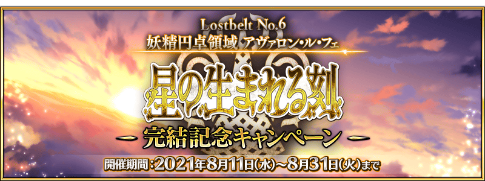
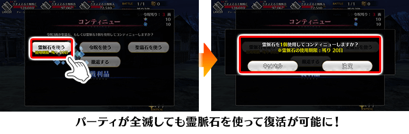
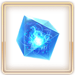

為了記念「Lostbelt No.6 妖精圓卓領域 阿瓦隆・勒・菲 星辰誕生之刻」的完結，舉辦『「Lostbelt No.6 妖精圓卓領域 阿瓦隆・勒・菲 星辰誕生之刻」完結記念宣傳活動』！
◆宣傳活動舉辦期間◆
2021年8月11日(三) 17:00～8月31日(二) 22:59
※本頁面皆為開發中圖片。會有與實際圖片相異的情況。
為了記念「Lostbelt No.6 妖精圓卓領域 阿瓦隆・勒・菲 星辰誕生之刻」的完結，實施登入獎勵。
在下述期間中登入7次(1天算1次)的話，贈送最多黃金果實7個！
◆舉辦期間◆
2021年8月12日(四) 3:00～9月1日(三) 2:59
※在舉辦期間內7天間都登入的話，即可領取所有的登入獎勵。
◆贈送對象◆
2021年8月31日(二) 2:59前通過「特異點F 炎上汙染都市 冬木」的御主對象
※上述時間前，在管理室(ターミナル)畫面的關卡橫幅必須要有「CLEAR」的文字顯示。
◆登入獎勵內容◆
| 登入次數 | 贈送內容 | |
|---|---|---|
| 第1次 |

|
黃金果實 1個 |
| 第2次 |
|
黃金果實 1個 |
| 第3次 |
|
黃金果實 1個 |
| 第4次 |
|
黃金果實 1個 |
| 第5次 |
|
黃金果實 1個 |
| 第6次 |
|
黃金果實 1個 |
| 第7次 |
|
黃金果實 1個 |
※登入獎勵會在每天3:00配發。 ※合計7天內能領取，但根據成為贈送對象的時間點，可能無法到此上限。

下述的期間中，在「御主任務」的「限定」標籤內以期間限定追加「主線關卡進行度的任務」。
無論是第1部、第2部，推進任何主線故事的即可達成，可得到最多聖晶石12個、睿智的業火ALL★5(SSR)40張をゲットできます！
◆舉辦期間◆
2021年8月11日(三) 17:00～8月31日(二) 22:59
◆領取期間◆
2021年8月11日(三) 17:00～9月7日(二) 22:59
◆追加任務◆
| 任務名稱 | 任務達成報酬 | |
|---|---|---|
| 【第2部 第6章完結記念】 推進第1部＆第2部的主線關卡進行度1 |

|
聖晶石 1個 |

|
睿智的業火ALL★5(SSR) 3張 | |
| 【第2部 第6章完結記念】 推進第1部＆第2部的主線關卡進行度2 |
|
聖晶石 1個 |
|
|
睿智的業火ALL★5(SSR) 3張 | |
| 【第2部 第6章完結記念】 推進第1部＆第2部的主線關卡進行度3 |
|
聖晶石 1個 |
|
|
睿智的業火ALL★5(SSR) 5張 | |
| 【第2部 第6章完結記念】 推進第1部＆第2部的主線關卡進行度4 |
|
聖晶石 2個 |
|
|
睿智的業火ALL★5(SSR) 5張 | |
| 【第2部 第6章完結記念】 推進第1部＆第2部的主線關卡進行度5 |
|
聖晶石 2個 |
|
|
睿智的業火ALL★5(SSR) 8張 | |
| 【第2部 第6章完結記念】 推進第1部＆第2部的主線關卡進行度6 |
|
聖晶石 2個 |
|
|
睿智的業火ALL★5(SSR) 8張 | |
| 【第2部 第6章完結記念】 推進第1部＆第2部的主線關卡進行度7 |
|
聖晶石 3個 |
|
|
睿智的業火ALL★5(SSR) 8張 | |
※請注意舉辦期間與領取期間有所差異。 ※請注意與每週日23:00更新的普通任務(Weekly)不同欄位，超過領取期間的話無法入手報酬。 ※就算達成「【第2部 第6章完結記念】任務」，也不會計算在普通任務(Weekly)的任務進行度。 ※在通過對象主線關卡的時間點，任務會自動達成。 ※敬請注意亞種特異點(從Ⅰ到Ⅳ)、及主線分支為任務對象外。

下述的期間中，主線關卡第2部 第6章的消耗AP變成1/2！(就算在戰鬥中撤退的情況，也會是同様的消耗量)
務必藉此機會通過第2部 第6章吧！
◆舉辦期間◆
2021年8月11日(三) 17:00～8月31日(二) 22:59
◆對象關卡◆
主線關卡第2部 第6章
下述的期間中，第2部 第6章的自由關卡初次通過前的消耗AP變成1/2！(就算在戰鬥中撤退的情況，也會是同様的消耗量)
務必藉此機會通過第2部 第6章的自由關卡吧！
◆舉辦期間◆
2021年8月11日(三) 17:00～8月25日(三) 11:59
◆對象關卡◆
第2部 第6章的自由關卡
※初次通過是指入手初次通過報酬的時間點。
在「主線關卡通過聲援宣傳活動」再登場的「靈脈石」有效期間延長到下述的期間！
另外，也延長可領取「靈脈石」的登入獎勵期間！
「靈脈石」是不用消耗令咒3劃或聖晶石就可回歸戰鬥的道具，請務必在與主線故事的強敵戰鬥活用！
「靈脈石」在下述期間中，初次登入時會做為登入獎勵領取1遍。
◆道具使用期限◆
2021年8月11日(三) 17:00～8月31日(二) 22:59

※敬請注意「靈脈石」的使用有使用期限，超過期限「靈脈石」就會消失。 ※「靈脈石」只可在包含亞種特異點的主線故事中使用。 ※敬請注意無法在期間限定活動及主線分支使用。
◆能使用對象關卡◆
主線故事第1部(到終局特異點)
亞種特異點(從Ⅰ到Ⅳ)
主線故事第2部(到第6章)
◆登入獎勵對象◆
所有的御主對象
※新御主玩家，必須推進至通過「特異點F 炎上汙染都市 冬木 第3節 進行度1」。
◆登入獎勵實施期間◆
2021年8月11日(三) 17:00～8月25日(三) 11:59
◆登入獎勵內容◆
| 道具名 | 個數 | |
|---|---|---|
|  | 靈脈石 | 3個 |
配合「靈脈石」的使用期間延長，也延長在「御主任務」的「限定」標籤內以期間限定追加「【第2部 第6章開幕前夕】任務」的舉辦期間。
通過至主線故事第2部 第5章 奧林帕斯的話，可得到靈脈石7個！
◆舉辦期間◆
2021年8月11日(三) 17:00～8月25日(三) 11:59
◆領取期間◆
2021年8月11日(三) 17:00～8月31日(二) 22:59
限定任務的詳細在此
【8月18日(三) 17:00追記】
其他還有，
・第2部 第6章完結記念Pick Up召喚(每日交替)
・第2部 第6章完結記念Pick Up2召喚(每日交替)
以期間限定同時舉辦！
關於詳情，請自下述橫幅確認。